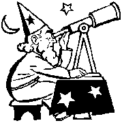

|
  |
  |
 |
Fábula de los Astronomos |


Cuentan que hace muchos años en Alejandría se encontraban reunidos los mejores historiadores y sabios para reproducir los textos de la Biblia.
¡Eran los 70¡
Muchos de ellos eran expertos Astrónomos que estudiaban las Estrellas del Cielo.
Cierta noche estaban reunidos, el Griego, el Arameo, el Árabe y el Hebreo, admirando las estrellas y repasando los nombres con los cuales podían reconocerse por los grupos que parecían formarse en constelaciones.
El Hebreo, dijo:
-Inteligentes los amigos Astrónomos que nos antecedieron, a las Estrellas del Cielo las identificaron con nombres sugestivos, fáciles de recordar, útiles para orientar a los navegantes, que siguen indicando el rumbo, y en el texto que revisaba del Génesis, encontré una pista mensaje.
-Es historia vieja, contesto el Árabe, los egipcios les escogieron nombres, para poderlas distinguir, como a la gente, pero ¿a que pista te refieres?
- Pues hombre, el relato del cuarto día de la Creación.
Dice que el Creador hizo las “Estrellas para Alumbrar la Tierra” y creo que se refiere a los hombres que deben iluminar a las personas que les rodean. Dijo el Hebreo.
-Me suena a clave, a símbolo, a mensaje cifrado y secreto opinó el Griego, como las historias que usamos para comunicarnos entre nosotros.
-Opino, que los Astrónomos, estamos llamados a enseñar una ciencia difícil de explicar y debe, poner cuidado en las metáforas que utilizamos, para definir las posiciones de las demás personas, la preferencia de los grupos, las elecciones de algunos, sus orientaciones, sin pretender dar cátedra, dijo el arameo.
- En ese cuarto día, también dice que las Estrellas señalaran el tiempo, e iluminarán la Tierra de día y de noche, siendo que las Estrellas, alumbran poco y en la noche sola se ven como punticos ¡! Dijo el Árabe.
- Creo que se hace una referencia a las “Estrellas Humanas” unas alumbran, otras dependen o están detrás de otras. Porque el espacio lo tienen todas, o no ¿dijo el Arameo?
- Definitivamente las personas son, como las Estrellas, algunas se notan claramente, otras ni uno se entera, yo creo que las más brillantes, son las que demuestran lo que son ¡Y talvez las Constelaciones son como los grupos que eligen las “Estrellas Humanas”, al integrarse social o culturalmente y los hombres y sus mujeres, son como las historias de los dioses del olimpo como los describen los historiadores y escritores. Copiados de los valores humanos en la Tierra! Opinó el Griego.
- Propongo que busquemos entonces más nombres que señalen las proezas buenas y malas de las personas, y que sean las “Estrellas”, aunque no sean las culpables, que muestren los ejemplos del devenir humano, además será divertido. Dijo el Hebreo.
-Para nosotros " el respeto " es nuestra ley suprema, los nombres de las Constelaciones en la eclíptica y los ya dados quedaran así, solo agregaremos lo nuestro y anónimamente. Dijo el Arameo con una carcajada.
Aprovechemos esta oportunidad, nos reuniremos en nueve días aquí, con nuevos nombres para identificar más constelaciones de estrellas, con libertad para elegir los mejores nombres para orientar, dijo el Árabe.
Y cuenta la leyenda que así eligieron nombres como Cefeo, Casiopea, Andrómeda, Perseo, Pegaso, Hydra, Hydrus, Bootes, Cochero, Unicornio, Centauro.
Que representan, el padre, la madre, la hija, el hijo, la juventud intrépida, los gustos, ilusiones, fantasías y diferentes oficios, como modelos e inclinaciones de los seres humanos, con mensajes escondidos sugiriendo sus actitudes y acciones.
Y Colorin, Colorao los Astrónomos se hicieron Anónimos y se sonrieron por el resultado.
Corima Lumen Riubegez. 2000-12-05.
(Fabula para niños enviada a www.AstroRed.com en 2000-12-05)
enido